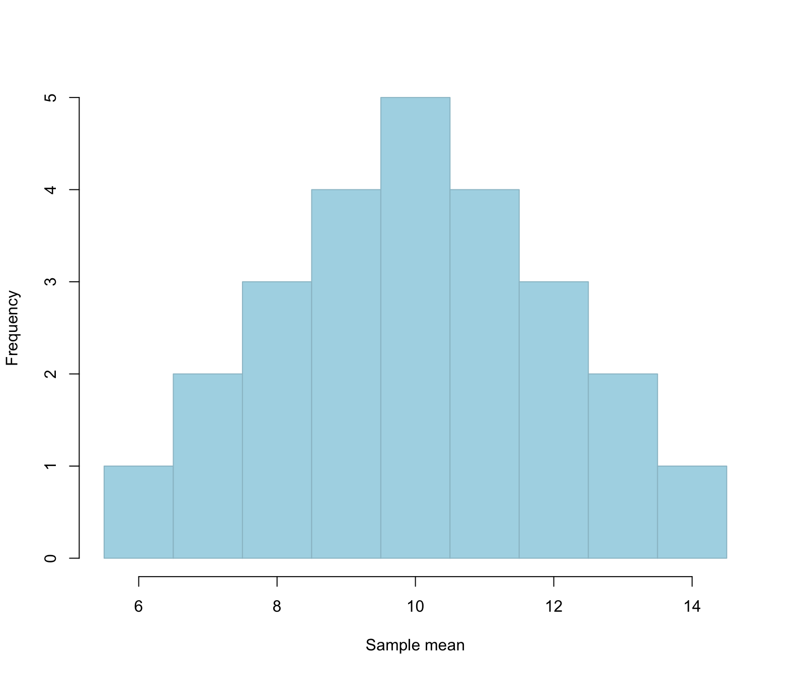

Hypothesis testing: p-values
Understand null and alternative hypotheses, and how to specify them for a given research question.
Understand the concept of and how to obtain a null distribution.
Understand statistical significance and how to calculate p-values from null distributions.
Hypothesis testing
Introduction
The data for the entire population is often not available. However, researchers typically want to answer questions about population characteristics.
By characteristics of a population we mean population parameters, i.e. numerical summaries. Examples are the mean, the standard deviation, a proportion, etc.
Last week we learned how to provide an estimate of the population mean starting from a random sample, as well as a measure of the precision of our estimate.
- The sample mean \(\bar x\) is the estimate of the unknown population mean.
- The standard error of the mean \(s / \sqrt{n}\) provides the reader with a measure of precision in our estimate, or better, the size of a typical estimation error.
This week we will learn how to test a claim about the population mean, starting from sample data.
Testable hypotheses
In statistics, a hypothesis is a claim, in the form of a precise mathematical statement, about the value of a population parameter.
Examples:
\(\mu = 100\)
where \(\mu\) is the population mean IQ score.\(\sigma = 15\)
where \(\sigma\) is the standard deviation of IQ scores in the population.
Note:
A hypothesis is a claim about a population parameter and not about a sample statistic.
We can compute the value of the sample statistic, so there is no need to perform a test on what its value might be. We can simply look at the value, unlike population parameters. If your sample has a mean \(\bar x = 2\), would it make sense to ask whether the sample mean is 0? No, clearly the sample mean is 2 which is different from 0.
We make hypotheses about things that are unknown, such as parameters.
The five parts of a test of significance
To perform a hypothesis test we need:
The null hypothesis, denoted \(H_0\).
- This is typically a skeptical reaction to a research hypothesis.
The alternative hypothesis, denoted \(H_1\).
- This is the claim we seek evidence for.
The test statistic. This is used to measure how consistent the data are with the null hypothesis. For testing a mean we use the t-statistic, denoted \(t\).
- The t-statistic measures measures how many SEs away from the hypothesised mean is the observed sample mean. That is, it measures how much the sample data differ from what expected when the null hypothesis is true.
The significance level, denoted \(\alpha\)
- The significance level is a cutoff chosen by the researcher (you!). Typical values are 0.10, 0.05, or 0.01.
- A value of 0.05 would mean that you would obtain such result if \(H_0\) is true only in 1 out of 20 samples (or, equivalently, 5 out of 100).
The p-value
- The probability of obtaining a test statistic at least as extreme as the observed test statistic, if the null hypothesis is true.
- If the p-value \(\leq \alpha\), we reject \(H_0\) as the data provide enough evidence (at the chosen \(\alpha\) level) against \(H_0\) and in favour of \(H_1\)
- If the p-value \(> \alpha\), we fail to reject \(H_0\) as the data do not provide sufficient evidence against \(H_0\) and in favour of \(H_1\)
- If \(H_1 : \mu > \mu_0\), compute the p-value by finding \(P(T > t)\)
- If \(H_1 : \mu < \mu_0\), compute the p-value by finding \(P(T < t)\)
- If \(H_1 : \mu \neq \mu_0\), compute the p-value by finding \(P(T < - |t|) + P(T > + |t|)\)
Example
Imaginary case
Suppose you have an imaginary toy population of 5 individuals, on which you collect a score, and the mean score is actually equal to 10.
pop <- c(6, 8, 10, 12, 14)
mu <- mean(pop)
mu## [1] 10If we could only afford to sample \(n = 2\) individuals, and take all possible random samples, what would all the possible sample means look like?
| sample_id | sample | xbar |
|---|---|---|
| 1 | (8, 6) | 7 |
| 2 | (6, 8) | 7 |
| 3 | (10, 6) | 8 |
| 4 | (6, 10) | 8 |
| 5 | (12, 6) | 9 |
| 6 | (10, 8) | 9 |
| 7 | (8, 10) | 9 |
| 8 | (6, 12) | 9 |
| 9 | (14, 6) | 10 |
| 10 | (12, 8) | 10 |
| 11 | (8, 12) | 10 |
| 12 | (6, 14) | 10 |
| 13 | (14, 8) | 11 |
| 14 | (12, 10) | 11 |
| 15 | (10, 12) | 11 |
| 16 | (8, 14) | 11 |
| 17 | (14, 10) | 12 |
| 18 | (10, 14) | 12 |
| 19 | (14, 12) | 13 |
| 20 | (12, 14) | 13 |
As you see above, each sample leads to a different sample mean. We can plot those means with a histogram, to find what sample means happen more often, and which sample means happen less frequently, when the population mean is in fact \(\mu = 10\). Remember? I gave you a population where the mean was exactly equal to 10.

We notice a few things. When the population mean is \(\mu = 10\):
- Most samples will have a sample mean which is close to the true population mean
- Very few samples will have a sample mean that is far away from the true population mean
In this case,
- 4 samples only have a sample mean \(\leq\) 8
- 12 samples have a sample mean between 9 and 11
- 4 samples only have a sample mean \(\leq\) 12
So, if the population mean is truly \(\mu = 10\), it is less likely to obtain a sample with a mean of 7, and it is more likely to obtain a sample with a mean of 9, 10, or 11 for example.
We can also add a density above:

The plot above is called a null distribution and it tells us the possible values that the sample means can take, assuming that the population mean is equal to some value (in this case assuming \(\mu = 10\))
Key question
If you obtained a sample with a mean of 20, would you find this consistent with a population having a mean of 10, or would you start doubting this and perhaps find it more likely that the population mean was different from 10?
If your sample had a mean of 20, when in fact this is a value you don’t expect to happen that often in the null distribution, we would find this a surprising result, and we would doubt the population has a mean of 10.
Now we must go back to reality and realise that we cannot really take all possible samples from a population. We can only afford one and we must work with that single sample we have.
Real life: One sample only
Suppose your sample is (6, 12).
Let’s compute the observed sample mean:
x <- c(6, 12)
xbar <- mean(x)
xbar## [1] 9We wish to test whether the population the sample came from has a mean different from 10.
\[ H_0: \mu = 10\\ H_1: \mu \neq 10 \]
Key question:
The mean in our sample is 9. Could a sample mean of 9 easily come from a population that has a mean of 10? Or is it very unlikely for a population with mean 10 to give rise to a sample with mean 9?
t-distribution
Instead of working with the sample means directly, we work with the standardised sample means, using the t-statistic to standardise them. (Call it t-score if you prefer, to remind you of the z-score). The formula is:
\[ t = \frac{\bar x - \mu_0}{s / \sqrt n} \]
First let’s compute the observed value of the t-statistic, which uses the mean from the observed sample. Furthermore, remember that in our case \(H_0 : \mu = 10\).
xbar <- mean(x)
xbar## [1] 9s <- sd(x)
n <- 2
SE <- s / sqrt(n)
SE## [1] 3tobs <- (xbar - 10) / SE
tobs## [1] -0.3333333So:
\[ t = \frac{9 - 10}{3} = -0.33 \]
We know that the t-statistic follows a \(t(n-1)\) distribution. So, in our case a \(t(1)\) distribution.

How likely is it to obtain a t-score at least as extreme as -0.33?
In this case \(H_1\) has the \(\neq\) symbol. Something is different from 10 when it’s either much larger or much smaller. So we find the probability of t-statistics that are either more distant from the hypothesised value of 10 on the left tail, but also on the right tail.
How likely is it to obtain a t-score either lower than -0.33 \((=-|t|)\) or larger than 0.33 \((= +|t|)\)?
pvalue <- pt(-abs(tobs), 1, lower.tail = TRUE) +
pt(+abs(tobs), 1, lower.tail = FALSE)
pvalue## [1] 0.7951672Comparing the p-value with \(\alpha\) = 0.05, we find that the p-value is larger than the significance level and as such we do not reject \(H_0\).
The sample data do not provide sufficient evidence to reject the null hypothesis that the sample \((6, 12)\) came from a population with mean 10.
Test your knowledge
What about if the sample you collected was (172, 194)? Could this come from a population having mean = 10?
Summary
We have learned to assess how much evidence the sample data bring against the null hypothesis and in favour of the alternative hypothesis.
The null hypothesis, denoted \(H_0\), is a claim about a population parameter that is initially assumed to be true. It typically represents “no effect” or “no difference between groups.”
The alternative hypothesis, denoted \(H_1\), is the claim we seek evidence for.
We performed a hypothesis test against \(H_0\) (and in favour of \(H_1\)) following these steps:
- Formally state your null and alternative hypotheses using precise symbols
- Consider the distribution of the t-statistics when \(H_0\) is true
- Compute the observed value of the t-statistic in our sample
- Obtain the p-value: the probability, computed assuming that \(H_0\) is true, of obtaining a t-statistic at least as extreme as that observed. Note: as extreme means “in the direction specified by \(H_1\).
Exercises
A 2011 study by Courchesne et al.1 examined brain tissue of seven autistic male children between the ages of 2 and 16. The mean number of neurons in the prefrontal cortex in non-autistic male children of the same age is about 1.15 billion. The prefrontal cortex is the part of the brain most disrupted in autism, as it deals with language and social communication.
In the exercises you will perform a test of significance to assess whether this sample provides evidence that autistic male children have more neurons (on average) in the prefrontal cortex than non-autistic children.
Read the data into R.
Compute and interpret a table of descriptive statistics.
State the null and alternative hypotheses.
Compute the value of the t-statistic from the sample mean number of neurons.
Identify the null distribution.
Compute the p-value for the test.
Using a 5% significance level, i.e. \(\alpha = 0.05\), report whether or not you reject the null hypothesis.
Write up your results in the context of the research question.
References
Courchesne, E., et al., “Neuron Number and Size in Prefrontal Cortex of Children with Autism,” Journal of the American Medical Association, November 2011;306(18): 2001–2010.↩︎